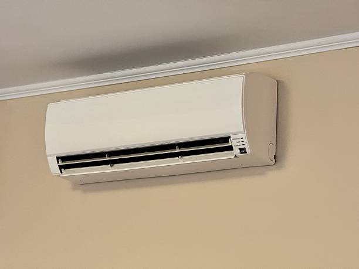

Premier Ductless Mini Split Services in Peterson, Alabama

As Peterson's trusted ductless mini split specialists, we provide comprehensive HVAC services throughout this Alabama rural community and surrounding areas. Our team of certified technicians brings years of experience and manufacturer training to every project, serving Peterson residents and local businesses with the commitment to excellence that has made us the area's most reliable HVAC contractor.
Peterson's rural location in Alabama creates specific HVAC considerations for both residential and commercial properties. The combination of Alabama's challenging climate conditions and the community's rural setting makes ductless mini split systems an ideal choice for efficient, reliable climate control throughout the year.
Comprehensive Ductless Services for Peterson (35478)
We provide complete ductless mini split installation services throughout Peterson and surrounding areas in zip code 35478. Our installation expertise covers all property types, from traditional family homes to rural commercial properties and local businesses throughout the Peterson community.
Our professional repair services ensure that your existing ductless system receives expert attention whenever problems arise. We understand that system failures can significantly impact both residential comfort and business operations, which is why we maintain 24/7 emergency service availability and carry comprehensive parts inventories for efficient repairs.
Regular maintenance services are essential for optimal system performance in Alabama's demanding climate. Peterson's rural environmental conditions and weather patterns create specific challenges for HVAC systems that our maintenance programs are designed to address effectively while ensuring reliable long-term performance.
Rural Community HVAC Expertise
Our experience serving Peterson and similar rural Alabama communities has given us comprehensive understanding of the HVAC needs that come with rural settings and agricultural environments. We work with local residents, farming operations, and rural businesses to provide solutions that address the specific requirements of properties in agricultural and rural areas.
Ductless mini split systems are particularly well-suited for Peterson properties because they offer reliable operation, energy efficiency, and flexibility for various rural applications. Whether you need climate control for residential properties, agricultural buildings, or rural business establishments, ductless systems provide excellent solutions for rural community needs.
Residential Services Throughout Peterson
Peterson's residential community includes a variety of property types and styles, each with unique HVAC considerations. Our experience working with rural residential applications allows us to provide appropriate recommendations whether you're upgrading an existing system, improving energy efficiency, or adding climate control to specific areas of your home.

Many Peterson homeowners choose ductless systems for their energy efficiency, quiet operation, and ability to provide targeted climate control for specific rooms or zones. These systems are excellent for addressing comfort issues, improving efficiency, or providing climate control for home additions, workshops, or other specialized rural residential spaces.
Agricultural and Rural Business Services
Our commercial HVAC services extend throughout Peterson's rural business community, supporting agricultural operations, rural retail establishments, and specialized businesses that serve the local farming community. We understand the importance of reliable climate control for operations that support both local residents and agricultural activities.
Peterson businesses and agricultural operations choose ductless systems for their reliability, efficiency, and ability to provide consistent climate control for equipment protection, product storage, and employee comfort. Whether you're operating an agricultural facility, rural retail establishment, or service business, we can design and install systems that provide optimal performance while managing operational costs effectively.
Energy Efficiency Solutions for Peterson
Energy efficiency is a key consideration for Peterson residents and businesses looking to manage utility costs while maintaining comfortable indoor environments. Ductless mini split systems offer exceptional efficiency ratings, often achieving SEER values of 20 or higher, which can result in substantial energy savings compared to older HVAC systems.

The zone-specific control offered by ductless systems provides additional benefits for Peterson properties with varying usage patterns. Whether you need to control climate in residential living areas, agricultural buildings, or specialized rural business applications, ductless systems allow precise control based on actual occupancy and operational needs.
We also provide indoor air quality solutions that complement ductless systems to address dust, pollutants, and agricultural-related air quality concerns. Advanced filtration capabilities and humidity control features help maintain comfortable, healthy indoor environments while supporting efficient operation.
Emergency Service Throughout Peterson
Our 24/7 emergency service covers all areas of Peterson, ensuring that help is available whenever HVAC emergencies arise. System failures during extreme weather conditions, unexpected performance issues, or equipment problems that affect rural operations all receive prompt professional attention from our emergency technicians.
Our emergency service vehicles maintain comprehensive parts inventories for all major brands, allowing us to complete most repairs during the initial service call. When specialized parts are needed, our established relationships with suppliers throughout Alabama help minimize downtime and restore normal operation as quickly as possible.
Complete HVAC Solutions
While ductless mini splits are our specialty, we also provide complete HVAC services throughout Peterson. Our services include traditional air conditioning installation and repair, heating system services, and duct cleaning for properties with existing ducted systems.
Our heat pump services complement our ductless offerings, providing efficient heating and cooling solutions for properties that may benefit from traditional ducted systems. We evaluate each property individually to recommend the most appropriate and cost-effective solution for specific applications and operational requirements.
Serving Peterson and Surrounding Rural Areas
Our service area includes all of Peterson and extends to nearby rural communities throughout the region. We're familiar with the specific needs and challenges of rural Alabama communities, allowing us to provide solutions that address local conditions, agricultural considerations, and rural operational requirements effectively.
Whether you're located in the Peterson community center, on rural properties, or in surrounding agricultural areas, our team brings the same level of professional service and expertise to every job. We understand local building considerations, environmental conditions, and rural infrastructure challenges that affect HVAC system performance throughout the region.
Customer Satisfaction
Our Peterson area customers consistently praise our professional service, technical expertise, and understanding of rural community needs. With 203 five-star reviews from satisfied customers throughout the area, we've built a reputation as the most trusted ductless mini split specialists in rural Alabama communities.
Customers frequently mention our reliable service, professional installation practices, and ongoing support. Many note the significant improvement in comfort, energy efficiency, and system reliability they've experienced with professionally installed ductless systems designed for rural conditions and specific agricultural applications.
Investment Value
Professional ductless mini split installation represents excellent value for Peterson properties. The combination of energy efficiency, reliability, advanced features, and professional installation makes ductless systems an ideal investment for rural homes and businesses seeking modern comfort control solutions that provide measurable benefits.
The long-term benefits include reduced energy costs, improved comfort, enhanced reliability, increased property value, and lower maintenance requirements. For Peterson properties where dependable, efficient climate control supports both comfortable living and successful rural business operations, professionally installed ductless systems provide exceptional value and performance.
Map and Service Area
Advanced Technology and Features
Modern ductless mini split systems offer advanced features that enhance comfort and convenience for Peterson residents and businesses. Many models include WiFi connectivity, smart home integration, and energy monitoring capabilities that provide unprecedented control over your property's climate management system.
Smart scheduling and remote monitoring capabilities allow you to optimize system operation based on occupancy patterns, energy costs, and rural operational requirements. These features are particularly beneficial for agricultural applications where energy efficiency and remote monitoring provide significant operational advantages.
Seasonal Service Considerations
Alabama's seasonal climate variations require different approaches to HVAC system operation and maintenance. Our seasonal service programs help prepare your ductless system for challenging summer conditions while ensuring optimal performance during winter months when reliable heating becomes important for both residential comfort and rural business operations.
We provide spring preparation services that include thorough cleaning, system testing, and performance optimization to ensure reliable operation during peak cooling season. Fall services focus on heating system preparation and general maintenance for continued efficiency throughout the heating season and year-round reliability.
Rural Property Considerations
Rural properties in Peterson often have unique requirements related to dust control, humidity management, and equipment protection. Our experience with rural installations includes understanding of these factors and providing appropriate solutions for properties exposed to agricultural environments and rural conditions.
Ductless systems can be particularly effective for protecting sensitive equipment, maintaining comfortable work environments, and providing climate control for specialized rural applications. Whether you need temperature control for workshops, storage areas, or specialized facilities, we can design systems that address specific rural property requirements.
Contact Us for Peterson HVAC Services
Ready to experience the comfort and efficiency of professional ductless mini split services in Peterson? Contact our expert team today at (888) 918-9104 for your free consultation and estimate. We're available 24/7 to answer your questions, provide emergency service, and schedule convenient appointments that work with your schedule and rural operational requirements.
Whether you're a longtime Peterson resident, part of the rural business community, or involved in agricultural operations, our team is ready to help you discover the benefits of modern ductless technology. From initial consultation through professional installation and ongoing maintenance, we're committed to providing the professional service and rural expertise that Peterson customers deserve and expect.
Get Your Free Peterson Service Estimate
Serving All of Peterson
Get a free estimate for ductless mini split installation or repair services in Peterson, AL. Our rural community specialists provide expert service with comprehensive warranties.
- ✓ Rural community specialists
- ✓ Professional installation
- ✓ 24/7 emergency service
- ✓ Agricultural expertise